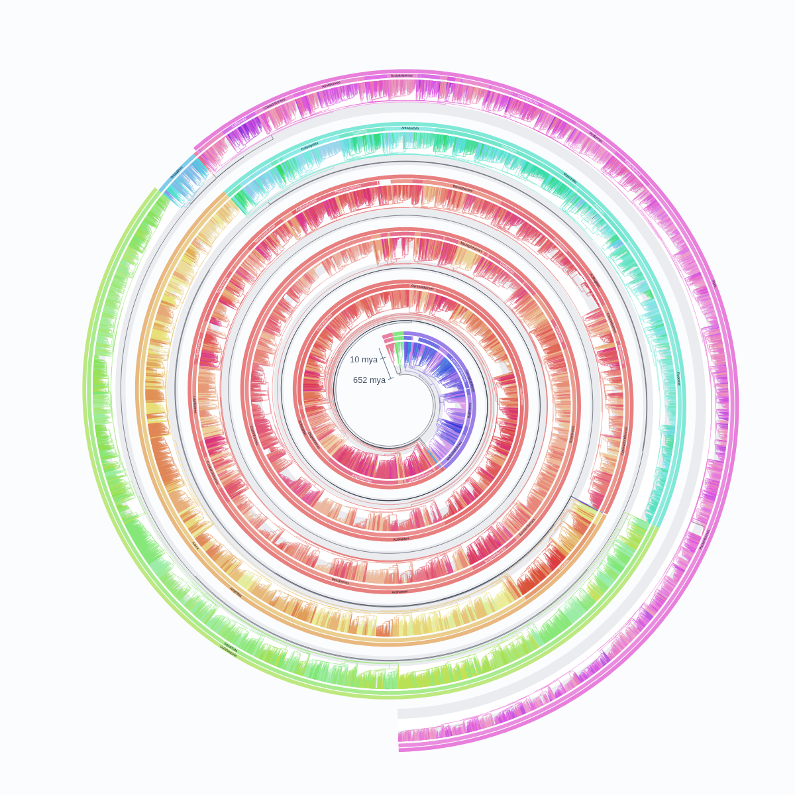
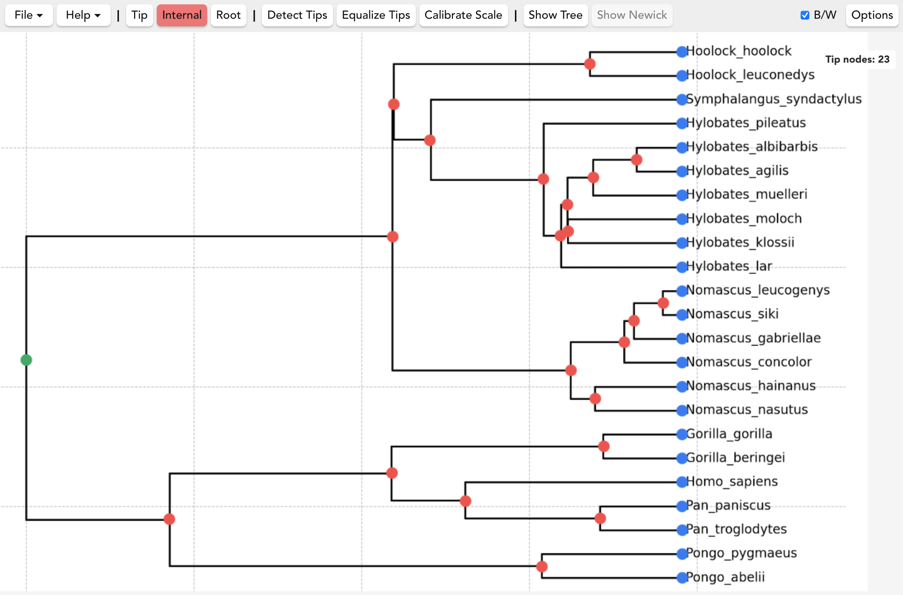
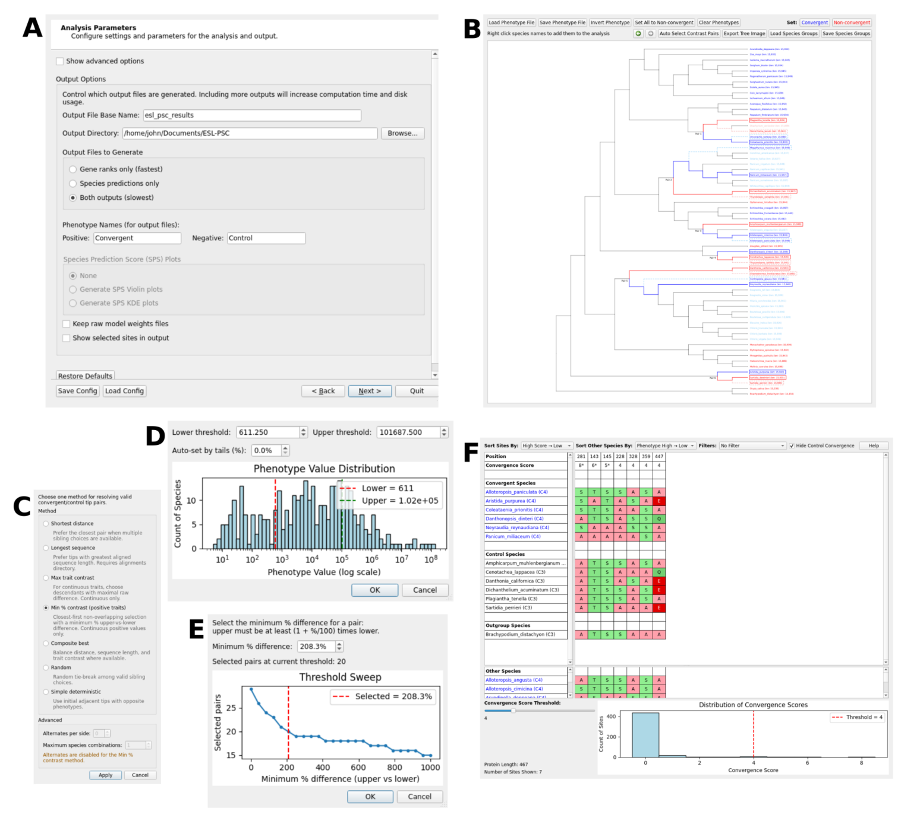

Machine learning for
comparative genomics
Developing interpretable models that identify genes and sequence changes associated with traits that evolved independently across species.
Evolutionary sparse learningPostdoctoral researcher · Temple University
Machine learning, comparative genomics, and phylogenetics
I develop machine-learning methods to uncover the genetic basis of shared traits across species, with a focus on longevity and aging.
I study the genetic basis of traits that have evolved independently in different species, using comparative genomics and machine learning.
Developing interpretable models that identify genes and sequence changes associated with traits that evolved independently across species.
Evolutionary sparse learningInvestigating what independently evolved long lifespans can tell us about the genes and biological pathways underlying longevity.
I study species’ evolutionary histories and build tools for viewing large phylogenies and extracting trees from published images.
Explore the toolsWork in progress
I develop software for viewing and digitizing phylogenetic trees and analyzing comparative genomic data.

Browser application
Explore very large phylogenetic trees directly in your browser. Navigate evolutionary relationships, add taxonomic context, and export figures.

Desktop application · macOS & Windows
Turn published phylogeny images into machine-readable Newick trees. Recover evolutionary data for new analyses, comparisons, and synthesis.

Comparative genomics toolkit
A graphical environment for designing phylogenetic contrasts, fitting models of convergent traits, and examining genes and sequence sites.
Figure 1, Allard & Kumar, Molecular Biology and Evolution (2026).
Molecular Biology and Evolution
A graphical interface brings phylogenetically informed species-pair selection, model fitting, and interpretation into a connected comparative-genomics workflow.
Bioinformatics
Treemble helps researchers recover machine-readable phylogenies from figures by marking node positions, with assistance from automated detection.
Nature Reviews Genetics
A review of the genetic mechanisms behind repeated trait evolution and the computational approaches used to distinguish adaptive convergence from background similarity.
Molecular Biology and Evolution
An AI assistant uses MEGA documentation and methodological resources to help researchers develop analytical protocols through natural-language questions.
Nature Communications
Phylogeny-informed machine learning identifies genetic signals associated with independently evolved traits, demonstrated with echolocation in mammals and C4 photosynthesis in grasses.
Postdoctoral researcher
Philadelphia, Pennsylvania
I’m a postdoctoral researcher in Sudhir Kumar’s lab at Temple University, in the Institute for Genomics and Evolutionary Medicine and the Department of Biology.
My work focuses on machine-learning methods for comparative genomics, particularly the genetic basis of longevity and aging. I also work on phylogenetics, both to account for shared ancestry in comparative analyses and to make published phylogenetic data easier to use.
Before my doctoral work, I studied insulin-like growth factor signaling and longevity regulation in short-lived killifish at the University of Michigan. My Ph.D. research at Temple focused on machine learning and comparative genomics to identify shared genetic signatures of convergent traits.
You can reach me by email about my research or software.
{kind=link}